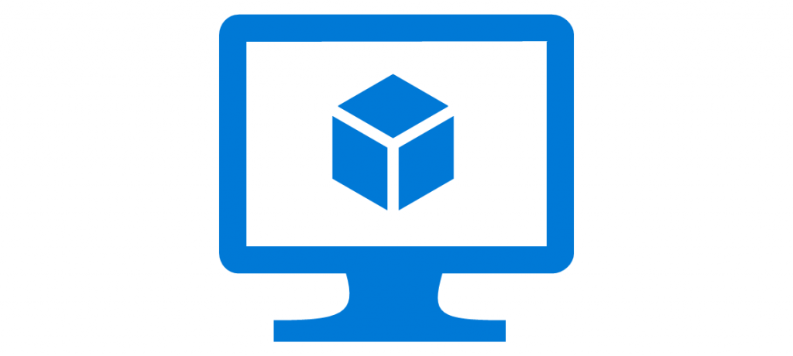

Azure Virtual Machines: What AZ-900 Expects You to Know

Virtual Machines are one of the most recognisable services in Azure, and AZ-900 covers them extensively. Microsoft wants you to understand not just what a VM is, but how to pick the right size, plan for availability, and know when a VM is the right choice versus a container or serverless option. This guide covers everything the exam expects.
What Is an Azure Virtual Machine?
An Azure Virtual Machine gives you full control over a server running in Microsoft's data centre. You choose the operating system, the hardware specs, and what software runs on it. You're responsible for patching, securing, and maintaining the OS and applications. This is Infrastructure as a Service (IaaS).
VMs are ideal for lift-and-shift migrations, custom software that needs a specific OS configuration, and workloads where you need full administrative access. If you need control over the environment, you want a VM.
VM Sizes and Families
Azure offers dozens of VM sizes grouped into families. Each family is optimised for a specific type of workload. For AZ-900, you don't need to memorise specific sizes, but you need to understand the categories and what they're for.
General Purpose
Balanced CPU-to-memory ratio. Good for testing, development, small to medium databases, and low-traffic web servers. The B-series (burstable) is popular for dev/test workloads because it accumulates credits during idle time and bursts when needed.
Compute Optimized
High CPU-to-memory ratio. Designed for batch processing, web servers with high traffic, gaming servers, and network appliances. The F-series is the main line here.
Memory Optimized
High memory-to-CPU ratio. For large databases, data analytics, and in-memory caches like Redis. The E-series and M-series are common choices.
Storage Optimized
High disk throughput and IOPS. For data warehouses, big data, and SQL Server workloads that need fast local storage. The L-series uses local NVMe disks for ultra-low latency.
GPU
Specialised for graphics rendering and machine learning training. The N-series includes NVIDIA GPUs. Used for video transcoding, 3D visualization, and model inference.
High Performance Compute (HPC)
Highest CPU performance with InfiniBand networking for tightly coupled parallel workloads. Used for scientific simulations, weather modelling, and computational fluid dynamics. The H-series is the main line.
| Family | Use Case | Example Sizes |
|---|---|---|
| General Purpose | Dev/test, web servers, small DBs | B-series, D-series |
| Compute Optimized | Batch processing, high traffic web | F-series |
| Memory Optimized | Large databases, analytics, cache | E-series, M-series |
| Storage Optimized | Data warehousing, big data | L-series |
| GPU | Rendering, ML training | N-series |
| HPC | Scientific simulations, modelling | H-series |
Availability Options
This is one of the most heavily tested areas of AZ-900. Azure offers several ways to keep your VMs running during planned and unplanned events.
Availability Sets
An availability set spreads VMs across multiple physical hardware within a single data centre. It uses two constructs:
- Fault domains: Groups of VMs that share the same power source and network switch. If a rack fails, only VMs in that fault domain go down. Azure gives you up to 3 fault domains per availability set.
- Update domains: Groups of VMs that can be rebooted together during planned maintenance. Azure updates one update domain at a time, ensuring your app stays available. You get up to 20 update domains.
Availability sets provide no SLA on their own, but they qualify your VMs for the 99.95% VM SLA when you deploy two or more VMs in the set.
Availability Zones
Availability Zones are physically separate data centres within an Azure region. Each zone has independent power, cooling, and networking. When you deploy VMs across multiple zones, you're protected against an entire data centre failure.
- Not every region supports availability zones
- Each region with zones has at least three zones
- Zonal VMs have a 99.99% SLA
- Cross-zone traffic incurs standard bandwidth charges
Virtual Machine Scale Sets
Scale sets let you deploy and manage a group of identical, load-balanced VMs. The number of VM instances can automatically increase or decrease based on CPU usage, memory pressure, or a schedule. This gives you built-in autoscaling and load balancing.
| Feature | Availability Set | Availability Zone | Scale Set |
|---|---|---|---|
| Protects against | Rack failure | Data centre failure | Rack failure + autoscaling |
| SLA (2+ VMs) | 99.95% | 99.99% | 99.95% or 99.99% |
| Autoscaling | No | No | Yes |
| Regional requirement | None | Zone-enabled region | None |
| Cost | Free (feature) | Free (feature) | Free (feature) |
VM Storage
Each VM uses at least two disks: an OS disk (usually 127-128 GB) and a temporary disk. You can add additional data disks.
Disk Types
- Ultra Disk: Highest performance, sub-millisecond latency. For extreme I/O workloads.
- Premium SSD v2: Next-gen SSD with per-GB IOPS and throughput config. Lower cost than Ultra but still high performance.
- Premium SSD: Consistent low latency for production workloads.
- Standard SSD: Affordable SSD for moderate I/O, dev/test.
- Standard HDD: Slowest and cheapest. For backup, staging, infrequent access.
Important Disk Concepts for AZ-900
- Managed disks: Azure manages the storage account. You don't need to worry about storage account limits. This is the default and recommended option.
- Disk snapshots: A point-in-time copy of a managed disk. Used for backups and migration.
- Disk encryption: Azure Disk Encryption uses BitLocker (Windows) or DM-Crypt (Linux) to encrypt OS and data disks. Azure Storage Service Encryption encrypts disks at rest by default.
VM Pricing Models
AZ-900 tests your understanding of how to optimise VM costs.
Pay-as-you-go
You pay per second for compute time. No upfront commitment, no cancellation fee. Best for short-term, unpredictable workloads, dev/test environments, and workloads that cannot be interrupted.
Reserved Instances
You commit to 1 or 3 years in exchange for a discounted rate (up to 72% off pay-as-you-go). Best for steady-state, predictable workloads. If you stop using the VM, you still pay for the reservation. Payment options: upfront, monthly, or no upfront — the more you pay upfront, the bigger the discount.
Spot Instances
You get unused Azure capacity at a deep discount — up to 90% off. The catch: Azure can evict your VM with 30 seconds notice when it needs the capacity back. Perfect for batch processing, dev/test, and fault-tolerant workloads. Not suitable for production critical apps.
Azure Hybrid Benefit
If you already have Windows Server or SQL Server licenses with Software Assurance, you can use them in Azure and pay only the base compute rate. This can save up to 40% on Windows VMs.
VM vs Containers vs Serverless
The exam expects you to compare compute options and pick the right one for a given scenario.
- Virtual Machines (IaaS): Full OS control, custom software, lift-and-shift. Highest responsibility.
- Containers (ACI, AKS): Lightweight, fast startup, portable. Good for microservices, CI/CD, modern apps. You manage the container runtime but not the host OS.
- Azure App Service (PaaS): Deploy web apps without managing servers. Handles auto-scaling, patching, load balancing. Good for web APIs, mobile backends.
- Azure Functions (Serverless): Event-driven, pay-per-execution. Scales to zero when idle. Good for scheduled tasks, webhooks, message processing.
Common AZ-900 VM Scenarios
- Scenario 1: "You need full control over the OS and want to migrate an on-premises app without changes." Answer: Azure VM.
- Scenario 2: "You need high availability for a critical app across multiple data centres in a region." Answer: Deploy VMs across availability zones.
- Scenario 3: "You need automatic scaling for a stateless web app." Answer: Virtual Machine Scale Sets.
- Scenario 4: "You want the lowest cost for a batch processing job that can be interrupted." Answer: Spot VMs.
- Scenario 5: "You need to reduce costs for a 3-year production workload." Answer: Reserved Instances.
What AZ-900 Expects You to Know
Here's the official exam objective checklist for compute:
- Describe virtual machine options — sizes, families, and when to use each
- Describe availability options — availability sets, availability zones, scale sets
- Describe VM pricing — pay-as-you-go, reserved, spot, hybrid benefit
- Compare VMs to other compute services — containers, App Service, Functions
- Understand managed disks and disk types
- Know the SLA commitments for single-VM, multi-VM, and zonal deployments
If you can work through the scenarios above and explain the trade-offs between each option, you're ready for the compute section of AZ-900.
Frequently Asked Questions
What's the difference between stopping and deallocating a VM?
Stop (without deallocate) keeps the VM's resources reserved — you still pay for compute. Deallocate releases the hardware and stops compute charges. You only pay for storage. Stopping from the Azure Portal deallocates by default, but stopping from within the OS does not.
Can I change a VM's size after deployment?
Yes, but the VM must be stopped (deallocated). You can then select a new size, as long as the size is available in your region and your subscription has enough quota. B-series VMs have some restrictions on resizing to non-burstable families.
How many VMs can I run for free?
The Azure free account includes 750 hours of B1s Windows VM and 750 hours of B1s Linux VM per month for 12 months. After that, you pay standard rates. The free tier does not include the 99.9% SLA — you need two or more VMs in an availability set or zone for SLA coverage.